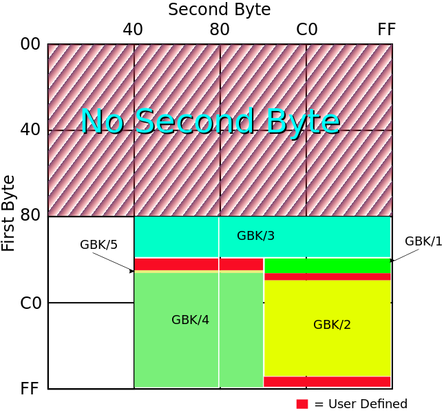
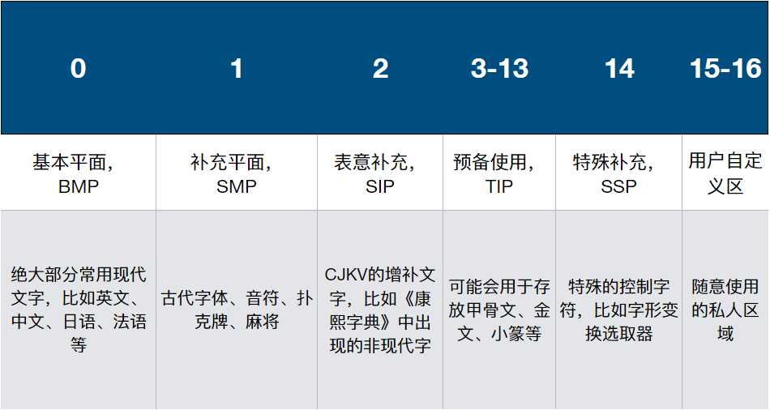
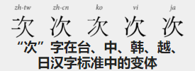
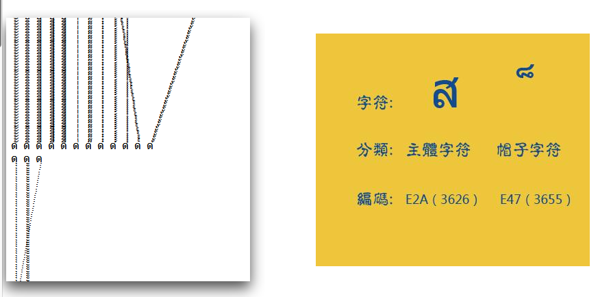
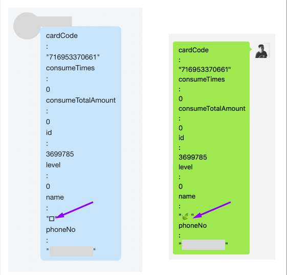
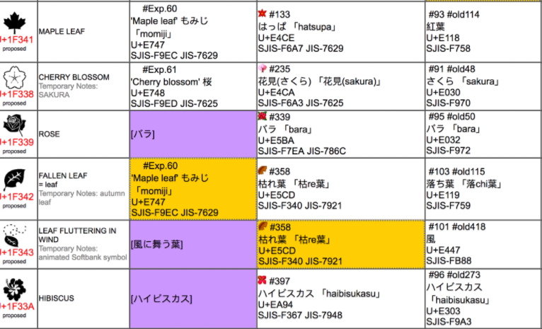

字符编码是计算机中非常重要的一环。过去，中国程序员经常需要做的一件事情就是处理中文在他们自己程序中是否可用。现如今我们很少和GBK较劲了，但字符编码并不等于不存在了。相反，随着emoji的出现，编码变得越来越有趣。
你知道吗
很难说大家对编码的理解到底达到怎样一个程度，因此我准备了一份问题列表，各位可以看看自己能答上来多少：
- ASCII为什么不能表达所有的字符
- Windows上的“乱码”是怎么来的
- Unicode到底涵盖哪些字符
- UTF-8和UTF-16有什么区别，UTF-32呢
- UTF-7是怎么回事，为什么没有人用了
- emoji是Unicode的一部分吗
- 为什么不同的emoji的字节数并不相等
- JavaScript对Unicode的支持度如何
也许有人能够全部立刻给出答案。如果你达到了这样的水平，麻烦在阅读时能够给出宝贵意见，指出文中的不实之处。如果绝大部分问题你都需要抓耳挠腮，那这篇文章就是为你准备的了。
编码到底是什么
我是个粗人，我就按自己的理解来说吧。编码就是把信息“格式化”。例如我心里想着，晚上要吃点好的，比如北京烤鸭。这个信息如果我用中文说出来，那么汉语其实就是一种“编码”，相应地，如果我用英语说出来，虽然意思一样，但编码不同，最终写在纸上就长的不一样。
计算机世界里的字符编码有类似的原理。同样“ABCD”四个字母，虽然在各位的脑海里是一样的，但如果这个信息要在计算机里表达，那么它必然要经过某种形式的编码。或者干脆说的具体一些，如果要把ABCD存储成文件落地在磁盘中，那么他们必定会成为一串二进制，而这个“内容”=>“二进制”的映射关系，就是编码了。一般来说，编码有两个重要的步骤：一是给每个字符一个确切的编号；二是将这个编号序列化成无歧义的二进制序列。
ASCII和代码页
ASCII基本上是所有程序员都能熟知的编码，这个编码本身的规则也比较简单：
- ASCII使用一个字节来表示一个字符，一个字节一共有256种可能性，
- 其中第0~31种可能性，用来表示各种控制符，例如换行符
- 32~126用于表达可见字符，包括字母、数字、常用标点等
- 第127种可能性是删除符，也属于一个控制符
不过问题在于，这种映射关系无法容纳中文、日语以及所有其他非英语国家的文字。以母语中文为例，现代汉语的常用字有2500个，次常用字有1000个，加起来远远超过了256种可能性，这就更别说其他文化下的文字了。
那么一个字节不够，用两个呗？
如果一个字符映射一个字节行不通，那么两个字节总该够了吧，掰手指头也能知道，两个字节多达65536种可能性，涵盖中文可以说是绰绰有余了。如果要纳入其他国家文字，说不定也够？
这个想法基本没错，实现也不复杂，但最大的阻碍来自于兼容性。在ASCII通行的年代里，已经有相当多的电子内容使用了ASCII来表达，如果现在突然改换编码，那么以前的文件恐怕就无法轻易读取了。更何况如果没有妥善的打上标签，一个文件到底是什么编码，也没有人知道了，总不能看一个文件像什么就用什么来解析吧。在这种情形之下，设计新的编码就要求必须能够兼容ASCII——亦即，新编码必须能够支持以前那套ASCII的映射关系。
所以这就出现了“代码页”。
在ASCII中，256种可能性只占用了128种，这128种可能性实际都位于1个字节的低7位中，最高位并没有内容。那么我们就可以在最高位做手脚，来识别一个字节究竟是ASCII，还是新编码2个字节中的第一个。
至于2个字节组合起来到底是什么字符，不同国家、地区以及公司，都有不同的安排，这个安排就是所谓的代码页了。因此，代码页不是一种编码，而是一系列编码所采用的方法。GBK这样的编码，就是在这个时代背景下诞生的。
下图是GBK编码对2个字节的使用情况，这张图来自于维基百科。
{kind=link}

GBK编码对2个字节的使用情况
不过，代码页并没有完全解决编码问题。
首先，代码页逐渐成为了操作系统、文字软件中，语言设置的一部分，并不在文件或字符当中。这就是说，在日文操作系统下产生的含有日文文字的文件，传输到中文操作系统下打开，就会因为彼此系统的代码页不同，而无法正常显示，俗称乱码。不过这还不是最惨的。
其次，单单Windows就有一百余种代码页，IBM、HP等厂商也有自己规定的代码页。IBM大型机上甚至有一千多种代码页。这就使得代码页的自动推导，很难施行。机器无法仅仅根据内容来准确判断文件所使用的代码页。当然，这个问题在今天看来未必完全不可行，毕竟现在人人都说自己在搞机器学习。我不是这方面的专家，我和当时的程序员一样一筹莫展。
最致命的一点是，各个组织、标准、国家，无法在哪个字符如何表达上达成一致，同一个二进制序列所代表的意思，产生了很大的歧义。即使2个字节能够涵盖现今文化中的所有字符，但大家无法妥善规范，又有什么意义呢。
Unicode，给每个字符一个无独立歧义的编号
Unicode是将一切字符编码到同一个编码体系的结果。这个规范有很多定义，大家如果想知道细节，可以去它的官网直接翻看定义。我这里不会说的特别准确和详细。
Unicode给每个字形一个独立的表示，叫做“码点”（code point）。为了方便表示，码点一般写作“U+xxxxx”，其中x为16进制表示的数字。例如U+54C8，就是“哈”。
用途或意思相近的码点被划分到不同的组当中，叫做“平面”（plane）。目前一共规定了16个平面，目前只使用到了其中少数几个。
{kind=link}

目前的平面分布
截至Unicode 10.0，Unicode一共规定了136,690个不重复字符。
可以看出，目前我们使用到的绝大部分字符，都放在BMP当中。
这里面有一个非常眼熟的缩写：CJKV。程序员老鸟可能见过CJK，CJK是什么呢？CJK特指中国（China）、日本（Japan）、韩国（Korea）这三国的表意文字。那么CJKV是什么意思呢？我特地查了一下，原来越南曾经也使用过汉字，被称为喃字。Unicode后来也包含了喃字，因此有了CJKV这个缩写。
{kind=link}

汉字标准中的变体。图片来自维基百科。
组合与拆分
Unicode不仅给每个字符分配了编号，而且为了适应一些语言的特殊性，还创造了一些新的花样。
Unicode中存在“组合字”的概念。使用者可以通过组合多个码点，“拼”出一个完整的字。
例如，Á 实际可以由U+0041（“A”）与U+0301 （“◌́” ）组合而成。在不同的环境里，U+0301可能会展示成不同的样子，不过如果你的软件支持，它应该会很像是一个拼音二声的样子。
那么哪些地方会出现这种“组合字”呢？我查到的是包括希伯来语、阿拉伯语、印度语和韩语，都有这样的场景。所以并不是多余的设计呢。
不过虽然已经有了拆分的概念，实际上Unicode还为某些常用字提供了“预组合”的写法。
例如刚才的Á，实际也有单独对应的码点：U+00C1。也就是说，同一个字，出现了两种写法。有点厉害了，但这还不是最厉害的，最厉害的是，这种组合拆分不一定发生在两个“半字”之间，还有可能更多个！
例如“ệ”这个越南字母，可以有多达5种组合方式：
- U+1EC7 “ệ”
- U+1EB9 “ẹ” + U+0302 “◌̂”
- U+00EA “ê” + U+0323 “◌̣”
- U+0065 “e” + U+0323 “◌̣” + U+0302 “◌̂”
- U+0065 “e” + U+0302 “◌̂” + U+0323 “◌̣”
{kind=link}

实际上不止一种文化当中存在组合字的概念。这组图片的的来源我不小心给忘了。
UTF一家子
上面的Unicode编码完成了给每个字符，甚至每个字形、字元一个编号的过程。但正如之前所说，编码的第二步，是还需要将这些编号能够序列化，否则这些编码只能停留于理论，无法进行传输和传播了。
不过在讲如何序列化Unicode之前，需要先稍微卖个关子，说一下字节序。
字节序是要解决一个问题：如果一次读取多个字节，组合成一个更大的数字时，哪部分在低位，哪部分在高位？
计算机世界里有两种主流字节序：大端序、小端序。大端序的意思是，先序列化的是大端，因此大端在前面传输；而小端序的意思是，先序列化的是小端，因此小端在前面传输。
例如，0x0A0B0C0D，这么长一个数字，在大端序和小端序的样子就是：
- 大端序：0A 0B 0C 0D
- 小端序：0D 0C 0B 0A
因为Unicode要使用不止一个字节来表示一个字符，字节序就成为了序列化时一个重要的考量点。
UTF-32
尽管UTF-8是大家最熟悉的Unicode序列化格式，但我想先说说UTF-32，这个编码是最为简单的。
UTF-32每个字符固定使用4个字节，因此理论上最多表达256^4种字符。然而实际上UFT-32要求每个字符最高位必须为0，所以比256^4稍微要少一些，不过仍然足以覆盖Unicode。
那么字节序怎么去考虑呢？
如果一个文件使用UTF-32存储，通常需要以U+FEFF来开头。如果程序读出的是0x00 0x00 0xFE 0xFF，则表示文件内容是小端序，反之则说明是大端序（0xFF 0xFE 0x00 0x00）。
这个特殊的四字节，被称为BOM。
UTF-16
UTF-16就比UTF-32要复杂一些了，不过大体上来说，除了构成“代理编码对”（surrogate pair）的情况以外，每个字符使用2个字节存储。而且和你想的一样，UTF-16也需要BOM，只不过BOM缩减到了2个字节。
那么什么是“代理编码对”呢？
最早UTF-16可以像UTF-32一样简单，只计划包含6万多个码点。令人意外的是，Unicode后来超过了这个数量，于是就有了代理编码对这样的技巧。
原理上来说，就是将一部分字符的表达，拆成了4个字节来表示。而为了不造成混淆，之前一些有效的2字节组合，也不再对应真实字符。
因此UTF-16的解码和编码，并不是简单地查表翻译，而存在一个“if”的情况。具体的算法并不复杂，大家可以自己搜索一下如何实现。维基百科上有一个非常不错的例子。
UTF-8
UTF-8可能是最常用的Unicode传输格式了，别看名字上是“8”，但实际只有ASCII涵盖的那些字符，才是真正1个字节。而Unicode里的其他字符，可能占用2个字节，也可能占用3个甚至4个字节。
UTF-8的算法比较精巧，在算法执行过程中，需要根据特定的情况来决定一个字符是否已经读完。而且算法当中也已经囊括了字节序相关的信息，因此UTF-8并不需要BOM。
由于兼容ASCII，UTF-8对于以英文为主的文本，最节省存储空间。这里特别注意下，UTF-16和UTF-32是不兼容ASCII的哦。
UTF-7
下面来说说这个异类。早期一些软件及协议对字符的限制很严格，导致使用了最高位的UTF-8在这些软件或协议中就会出现问题。UTF-7就是只使用低7位来进行编码。
具体的编码规则在这就不赘述了，我自己也没有深入去看，大体上来说，就是将一部分合法的ASCII字符用作转义，类似于base64。
不过值得一提的是，由于UTF-7中的转义规则，一些ASCII字符也可以被转义。例如“<”和“>”可以被转义为“+ADw-”“+AD4-”。这曾经导致过一些网站遭受UTF-7 XSS攻击，攻击者利用UTF-7编码逃过了敏感字符过滤，进而大摇大摆地向页面注入了自己的JS代码。关于这一点，感兴趣的各位可以自己搜索一下。
UCS与UTF
如今在一些很有来历的文本编辑器中，还可以看到一类编码，叫做UCS编码。UCS和UTF又是什么关系呢？
历史上曾经有两个国际组织都试图统一编码：一方是ISO的某个工作小组，另一方则是由Xerox和苹果等软件尝试组织起的联盟。后来毕竟大家目标一致，两个组织开始了合作。UCS曾是其中一方的工作成果，不过我忘了是哪一方。
UCS和UTF很像，其中UCS-2和UTF-16对标，但UCS-2没有代理编码对，而UTF-16有；UCS-4和UTF-32则基本等价。
Emoji
终于可以说说emoji了。Emoji早先由日本企业发明，日文将其称为“絵文字”。后来随着智能手机的推广，全世界都在用，于是被Unicode收编了。截至Unicode 10.0，共有1144个emoji被收录。
别小看这段无聊的历史介绍，这里面隐藏着一个很大的坑。
🍃与
这个小标题可能会有乱码或者显示一半的情况，这是有意为之。大家不妨来看一张图：
{kind=link}

图中是同一段数据在我司内部通讯工具和Mac版微信中的表现。
抛去格式不太友好之外，有一处特别的地方是emoji的两片飘叶显示不对。实际上除了微信，这个emoji在几乎哪都不显示。这就奇怪了，我特地把两个软件中的飘叶都复制出来，结果发现他们压根连码点都不同：
- 🍃: U+1F343
- : U+E447
emmmm…同一个emoji怎么会变码点呢？emoji的特殊规则？没听说啊。。
几经搜索，我终于找到了原因。原来iPhone中使用的emoji最早是软银的一套编码，飘叶在这套编码中的码点正是U+E447。这个码点位于用户可自定义的私有码位区域，因此现今以Unicode的角度来看这个字符，它是没有确切的字形的。现在绝大部分软件也都不再支持这套老emoji了。这个emoji来自于一位微信用户的昵称，恰好微信还支持这套老emoji，于是能够显示出来。
{kind=link}

从图中可以看到，飘叶在这套编码里恰好是U+E447。
从图中可以看到，飘叶在这套编码里恰好是U+E447。
单色与彩色
如果emoji就这点玩法的话，也不至于写这么一章了。实际上emoji比我最初的认识还要复杂很多。Unicode的emoji除了可以使用大家平时见到的彩色来展示，还可以用单色来展示，以适应一些非常简单的显示设备。
怎么做呢？规则就是在普通的emoji码点之后，紧跟一个用来表示颜色版本的“变幻符”，这个变幻符有两个取值：VS15（U+FE0E）和VS16（U+FE0F）。其中VS15表示强制使用单色版，而VS16则表示强制使用彩色版。如果没有变幻符呢，每个emoji可以使用自己默认的展示。
举个例子来说，U+26A0这个emoji可以有两种样子：
- ⚠︎(U+26A0 + U+FE0E)
- ⚠️(U+26A0 + U+FE0F)
各位还记得Unicode当中的“组合字”么，异曲同工。
肤色
想必大家已经见过了，现在每个人类emoji都有很多种肤色版本。Unicode从8.0开始，为所有展示人或人体部位的emoji都增加了肤色控制。
在普通人物的emoji码点之后如果跟上一个肤色码点，那么这个emoji就会采用相应的肤色。举个例子：
👃🏿 = 👃(U+1F443) + 🏿(U+1F3FF)
实际上不管emoji中的人是否露出皮肤，都可以这样组合，画emoji的人可以去抉择如何去表现。无论如何，现在用emoji已经可以这么干了：
🎅🏿???
emoji里的全家福
上面的emoji组合，都是同一个emoji内部的事情，然而实际上多个独立的emoji也可以进行组合。
在Unicode中，存在一个特殊的码点，被称为零宽字符（ZWJ），其码点为U+200D。这个零宽字符在平时是不会显示出来的，不然也不会叫零宽字符了。之前网上有人贴出“空字符串”几百个字节，就是用它了。
零宽字符在emoji中的作用，就是可以i将多个emoji组合成一个更大的emoji。大家平时在网上看到的全家福emoji，正是这样做出来的：
👨❤️💋👨 = 👨(U+1F468) + ZWJ(U+200D) + ❤(U+2764) + ZWJ(U+200D) + VS16(U+FE0F) + ZWJ(U+200D) +💋(U+1F48B)+ ZWJ(U+200D) +👨(U+1F468)
可以说是很解耦了。。
当然也不是所有的软件现在都支持ZWJ这种玩法，对于不支持的软件，全家福就会被打散。
Unicode && JavaScript
那么作为一个前端，JavaScript对Unicode的支持是怎样的呢？事实是，JavaScript的字符串使用UTF-16来存储字符。在我印象里，有这么几个函数与Unicode关系最大：
- String.prototype.charAt()
- 返回指定位置的字符
- String.prototype.charCodeAt()
- 返回指定位置的UTF-16编码
- String.prototype.codePointAt()
- 返回指定位置的Unicode码点
- String.length
- 返回对象中字符串所占的UTF-16单元数量
干说没用，来考虑一下下面这段代码：
// U+1F4A9 const str = '💩'; console.log(str.charCodeAt(0)); console.log(str.charAt(0)); console.log(str.codePointAt(0));
这是一坨屎无误，第一行log的情况是：
console.log(str.charCodeAt(0)); // 55357 // 0xD83D
嗯？好像和码点对不上？答案是这样的：
'💩' === '\u{1F4A9}'
'💩' === '\uD83D\uDCA9'
哦，原来这坨屎已经超出了UTF-16最初支持的2字节表示，因此需要使用代理对来表示，这样一来就不是直接给出码点了。
这样的话，第二行log输出也就很好理解了：
console.log(str.charAt(0)); // ‘?'
charAt比较简单，只是单纯地将UTF-16字符串按下标返回对应的字符，这里会打出一个代理对的一半，所以显示不出来。也就是说chartAt是不会完整吐出一个需要代理对的字来的。
第三个log给出了你可能最想要的：
console.log(str.codePointAt(0)); // 128169 // 0x1F4A9
这是真正的Unicode码点无误了。那么console.log(str.length);的话，会输出什么呢？由于这个属性返回的是UTF-16单元的数量，而这坨屎需要2个UTF-16单元，因此其输出会是2。这可不是字节数哦。
那么，既然str.codePointAt(0)能够返回出整坨屎的Unicode码点，那str.codePointAt(1)会返回什么呢？ES标准说了，如果这个下标不是代理对的开头，那么只返回指向的UTF-16单元，也就是说：
console.log(str.codePointAt(1)); // 56489 // 0xDCA9
最后说一下for循环的区别：
for(...i++;...)...str[i]: 按charCodeAt()进行循环for…in: 按charCodeAt()进行循环for…of: 按codePointAt()进行循环
所以只有for...of是真正理解Unicode的。大家用for来循环的时候，可要小心了，否则一不小心就会把代理对给拆开。
细节是魔鬼
计算机的历史只有短短不到100年的时间，而互联网则只有不到30年。因为历史很短，很多时候我们会产生一种假象，那就是计算机的历史好像是笔直的，一切设计都很合理、恰到好处，只需理解一下高抽象层次的概念和原理即可。而事实上则恰好相反，计算机世界的历史崎岖不平，充满了错误和因为错误而颠簸的设计，这里面隐藏了大量的细节。有时我们假装自己已经对程序了如指掌，“啊，编码嘛，不就是映射一下嘛；哦，HTTP协议嘛，很简单啊，就是个抽象层而已啊”，假装自己是高级程序员，因此好像可以忽略这些细节。实际呢，到处都是坑！
细节就是魔鬼，即使在看起来并不复杂的字符编码上也是如此。如果你忽视了这些，就只有用户来替你承担了。
参考
以下是我写这篇文章时用到的部分参考，另有一些可能没有列出。
- https://zh.wikipedia.org/wiki/Unicode
- https://zh.wikipedia.org/wiki/Unicode%E5%AD%97%E7%AC%A6%E5%B9%B3%E9%9D%A2%E6%98%A0%E5%B0%84
- https://zh.wikipedia.org/wiki/ASCII
- https://en.wikipedia.org/wiki/GBK
- https://en.wikipedia.org/wiki/Code_page
- http://www.unicode.org/versions/Unicode10.0.0/
- http://reedbeta.com/blog/programmers-intro-to-unicode/
- http://www.babelstone.co.uk/Unicode/HowMany.html
- https://en.wikipedia.org/wiki/UTF-8
- https://en.wikipedia.org/wiki/Emoji
- https://en.wikipedia.org/wiki/Variantform(Unicode)
- https://betterexplained.com/articles/unicode/
- http://www.unicode.org/~scherer/emoji4unicode/snapshot/full.html
- https://blog.ernest.me/post/emoji-remapping-solution
- http://www.unicode.org/reports/tr51/#Diversity
- http://blog.jonnew.com/posts/poo-dot-length-equals-two
- http://michaelthelin.se/security/2014/06/08/web-security-cross-site-scripting-attacks-using-utf-7.html